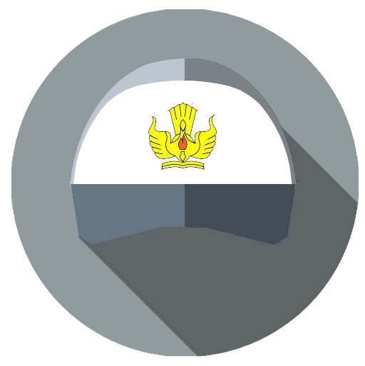

Riwayat pendidikan

Sekolah Dasar
Saya Bersekolah Dasar di, SD Inpres 22 Prafi, Distrik Prafi, Kabupaten Manokwari, Papua Barat

Sekolah Menengah Pertama
Saya Pernah Bersekolah Menengah Pertama di, SMP VIP Al-Huda,Kecamatan Kebumen,Kabupaten Kebumen,Jawa Tengah

Sekolah Menengah Kejuruan
Saya Bersekolah di, SMK Negri 4 Prafi, Jurusan Multimedia, Distrik Prafi, Kabupaten Manokwari, Papua Barat
softskill
SEO Opimization
SEO Adalah upaya mengoptimasi websit untuk mendapatkan peringkat,dihasil pencarian.Dengan mendapatkan ranking di gasil pencarian.Potensi trafik organik anda pun meningkat

Desain Grafis
Desain grafis atau rancang grafis adalah proses komunikasi menggunakan elemen visual, seperti tipografi, fotografi, serta ilustrasi yang dimaksudkan untuk menciptakan persepsi akan suatu pesan yang disampaikan.
Desain Web
Saya Bersekolah di, SMK Negri 4 Prafi, Jurusan Multimedia, Distrik Prafi, Kabupaten Manokwari, Papua Barat